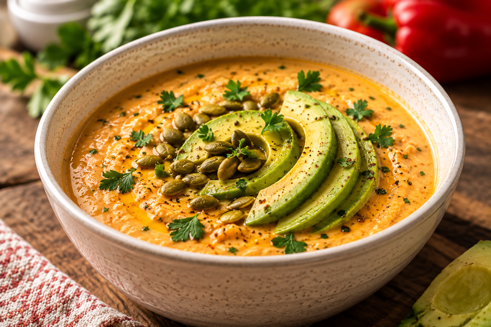

OVERFLOWED
Basic Biblical Nutrition

BBN Sweet Gypsy Pepper and Chicken Soup
A creamy, garden-fresh soup with sweet roasted peppers, tender chicken, silky kefir, and a little Southern-style goodness in every spoonful.
❧ • BBN Nutrient Density Score: ★★★★★
Page
OVERFLOWED
BBN Sweet Gypsy Pepper and Chicken Soup
Ingredients
- 3½–4 lb ripe Sweet Gypsy peppers (about 20–24 peppers), stemmed and seeded
- 1 large sweet onion, quartered
- 1 large leek, sliced
- 1 whole head garlic
- 1 (15 oz) can cannellini beans, drained and rinsed
- 2–3 cups rotisserie chicken or cook your own, pulled into bite-sized pieces
- 3–4 cups low-sodium chicken broth or homemade bone broth
- ½–¾ cup plain whole-milk kefir
- 2 Tbsp extra virgin olive oil
- ¼ cup toasted pepitas (optional)
- 1 ripe avocado, thinly sliced
- 1 Tbsp fresh thyme leaves
- ¼ cup chopped parsley
- 8–10 leaves basil, chiffonade (for garnish)
- 1 tsp smoked paprika
- ¼–½ tsp cayenne pepper
- Sea salt to taste
- freshly ground black pepper to taste
- ½ lemon, juiced
Page
OVERFLOWED
BBN Sweet Gypsy Pepper and Chicken Soup
Directions
- Roast the peppers, onion and garlic at 425°F for 30–40 minutes until lightly charred. Steam peppers for 10 minutes. Peel only if desired; leaving most skins adds fiber and nutrients.
- Sauté the leek in olive oil for 5 minutes. Add roasted vegetables, beans, broth, thyme, smoked paprika and cayenne. Simmer 15 minutes.
- Blend until silky smooth. Stir in lemon juice and adjust seasoning.
- Add the chicken and heat gently for 5–10 minutes. Do not boil.
- Cool below 140°F before stirring in kefir and parsley.
- Serve topped with fanned avocado slices, toasted pepitas, basil, a drizzle of olive oil, fresh cracked pepper and a light dusting of cayenne.
Page
OVERFLOWED
From the BBN Kitchen
Approximate Nutrition
Serving Size: Approximately 1½ cups soup with garnishes
TRACEY WAS HERE
- Calories
- ~320
- Protein
- ~25 g
- Carbohydrates
- ~22 g
- Fiber
- ~8 g
- Net Carbohydrates
- ~14 g
- Healthy Fat
- ~15 g
- Excellent Source: Vitamin C
- High In: Potassium
- Good Source: Magnesium
- Live Probiotics: Present when kefir is added below 140°F.
Functional Nutrition Snapshot
- Functional Nutrition Focus: Anti-inflammatory • Gut Health • Heart Health
- BBN Nutrition Pillars: Protein • Healthy Fat • Fiber • Phytonutrients
- Freezer Friendly: Yes (add fresh avocado after reheating)
- Gluten Free: Yes
- Non-GMO Friendly: Yes (ingredient dependent)
Every ingredient has a purpose.
Page